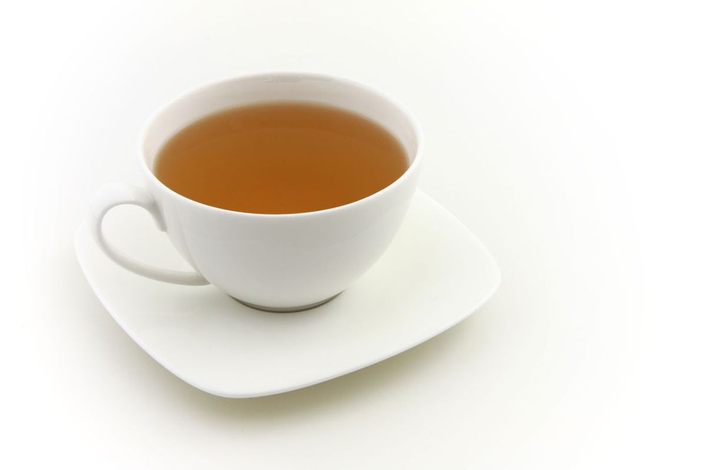
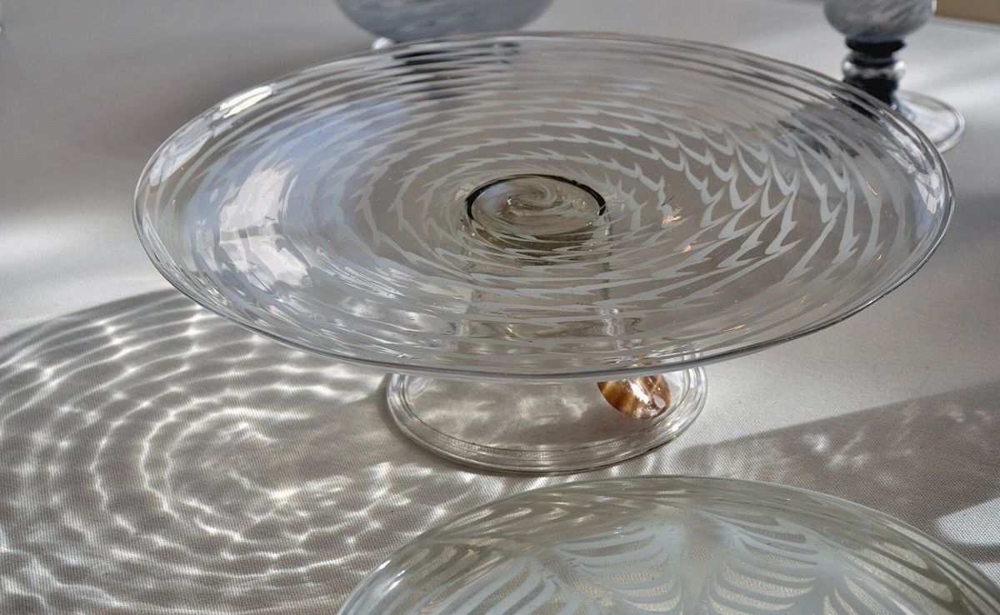
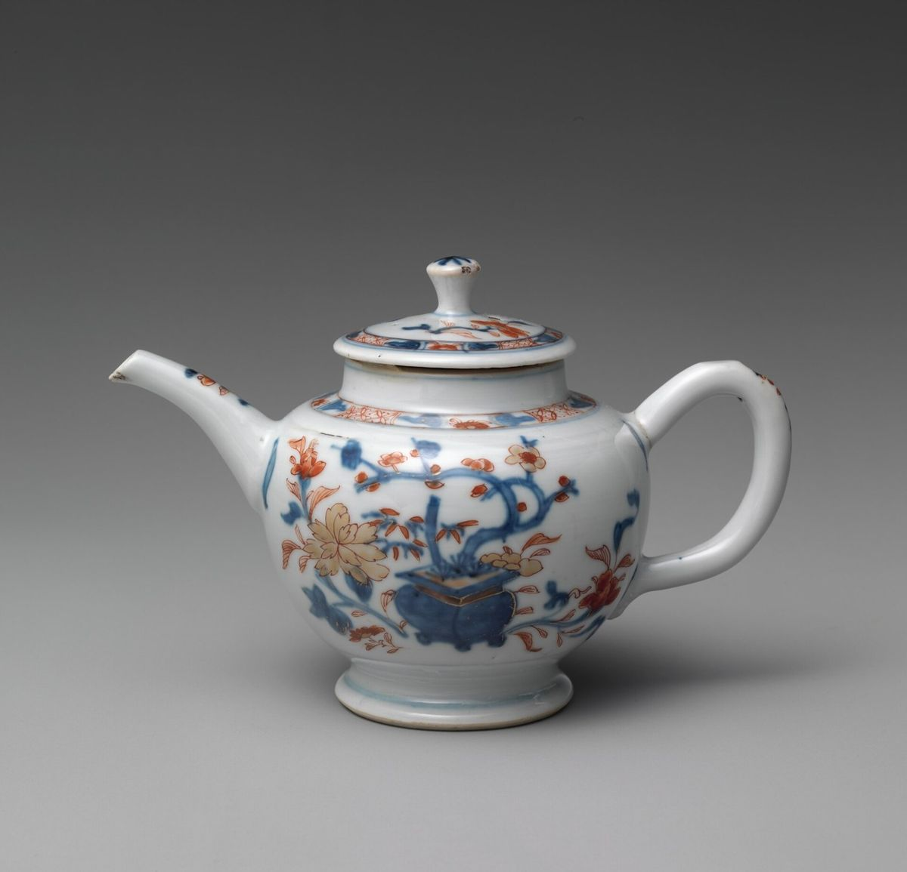
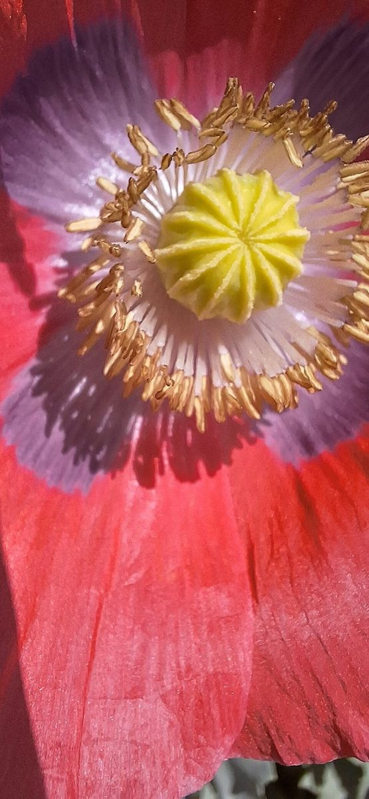

口コミ
想像した声(イメージ例)
以下は制作側の創作で、実在のお客様の投稿ではありません。



イメージ例
Instagramの投稿をのぞいてみたいと感じるお店です。営業時間などが載ったら、足を運んでみたいです。
イメージ例
お店のページに、営業時間が載る日を楽しみにしています。
イメージ例
Instagramのフォローを考えています。投稿が届くのが楽しみです。
上の3件は制作側が作った文例です。実際のお客様の声に差し替える前提のサンプルです。
